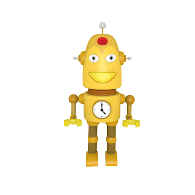
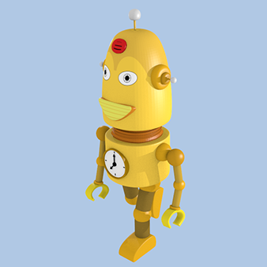
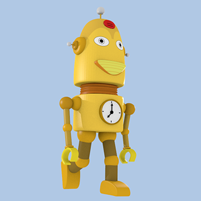
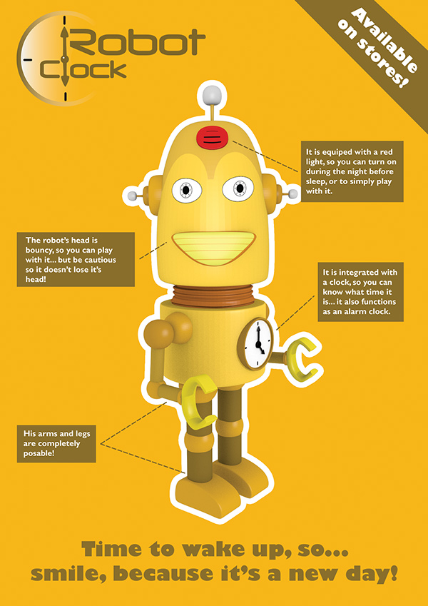
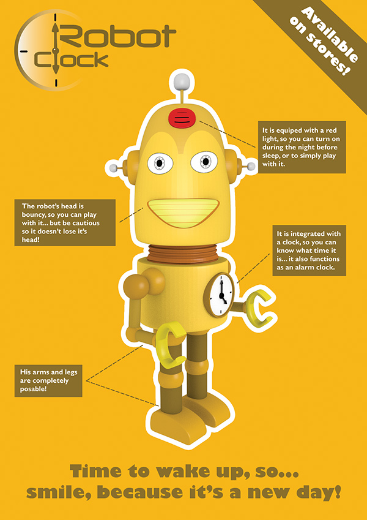
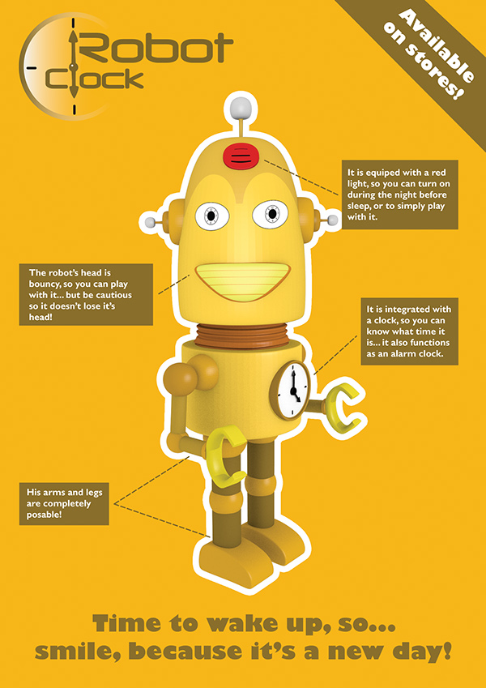

3D - The Clock Robot
This project was developed in an academic context of Digital Drawing III, in Instituto Politécnico do Cávado e do Ave. The objective was to create a 3D robot model and then animate it. After this process was done, the next objective was to do a poster featuring this robot. The robot is a toy named Clock Robot, designed in a cartoon way to appeal mainly the children audience. It has a function of a real clock, with an alarm.



 

